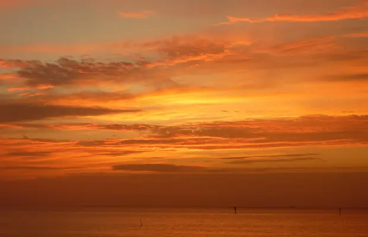

El amanecer
Tanto el Amanecer como el Atardecer son momentos mágicos de luz, momentos de singular belleza y muy determinantes en los sentimientos de las personas. El Sol nos brinda unos colores que, junto a las nubes y las figuras de la tierra, forman un conjunto único para nuestros ojos.
Son momentos diferentes del día, a veces, se nos hace casi imperceptible saber, viendo una imagen, si se trata del Alba o del Crepúsculo. Normalmente se dice que los colores del Amanecer son más suaves, con tonalidades tirando a los colores pastel, por el contrario, en el Atardecer los colores son más duros, con mayor contraste y tirando al rojizo, una teoría que muchas veces es sólo una teoría.
En los momentos previos al amanecer, la luz es rojiza alrededor del punto por donde saldrá el sol y violeta profundo en el resto del cielo. Luego la luz se vuelve rosácea y, cuando el sol sale por fin, se vuelve dorada. Durante la puesta de sol, esta progresión se invierte. Las cámaras fotográficas muchas veces muestran estos efectos de un modo más intenso a como los ven las personas, aunque es difícil prever sus efectos precisos, en ellos influyen muchos factores climáticos y atmosféricos.
Teniendo en cuenta que el elemento clave que determina el color predominante del cielo es la medida de las partículas dispersas, en algunas ocasiones, se desparraman las partículas de polvo y las gotitas de agua en un tamaño adecuado para vencer el componente rojo del Sol y el atardecer pierde intensidad.
Por otro lado el color de las nubes puede proporcionar al observador una indicación de su altura relativa en la atmósfera. La geometría determina que, cuando el Sol está justo por encima del horizonte, la luz que las nubes bajas reflejan habrán atravesado una gran parte de la atmósfera, y aparecerán por tanto más rojas que el color de las nubes altas.
Un Sol bajo codifica pues la altura de las nubes según su color; las más altas aparecerán blancas; las que están a media altura, amarillas y las más bajas, rojas.